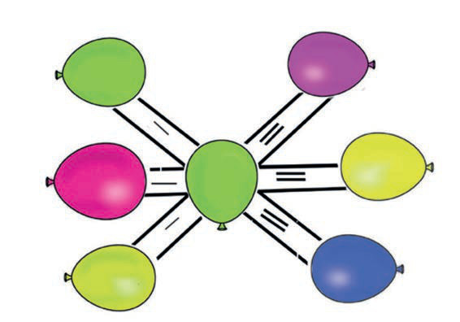

Subtracting numbers vertically without regrouping
Numbers are subtracted vertically from the right to the left.
Example
668
−346
322
hundredstensones
668
−346
322
Steps
1. Subtract ones: 8 − 6 = 2. Write 2 in the ones place.
668
−346
2
2. Subtract tens: 6 − 4 = 2. Write 2 in the tens place.
668
−346
22
61
61Question 2. Fill in the missing numbers in the balloons. The number web has 300 in the centre and six balloons around it. Starting at the upper left and moving clockwise, the outer balloons show 800, a blank, 200, a blank, 400, and a blank.2. Fill in the missing numbers in the balloons.Subtracting numbers vertically without regrouping. Numbers are subtracted vertically from the right to the left. Example. 668 minus 346. Solution. 668 minus 346 equals 322. Steps. Step 1. Subtract ones. 8 minus 6 equals 2. Write 2 in the ones place. Step 2. Subtract tens. 6 minus 4 equals 2. Write 2 in the tens place.Subtracting numbers vertically without regroupingNumbers are subtracted vertically from the right tothe left.Example+–636486Solution+–6364863 2 2Steps1.Subtract ones: 8 – 6 = 2. Write 2 in the ones place.+–63648622.Subtract tens: 6 – 4 = 2. Write 2 in the tens place.+–6364862 2400300200800ARITHMETICS PUPIL'S STD 2.indd 6106/11/2024 17:23